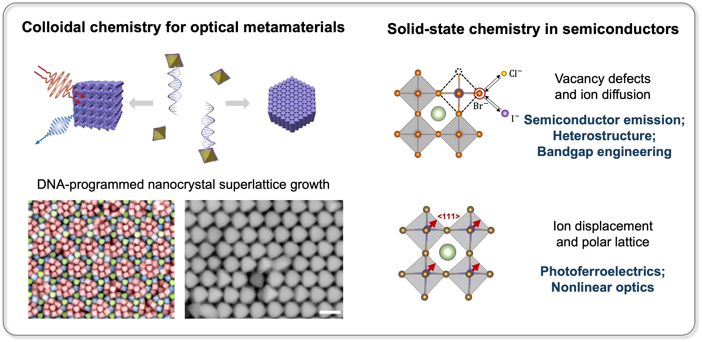

Academic | Researcher | Ph.D.
I received my Ph.D. in Chemistry from the University of California, Berkeley in 2021, and my B.S. in Materials Chemistry with the highest honor from the University of Science and Technology of China (USTC) in 2016. In 2022-2025, I am an International Institute for Nanotechnology Postdoctoral Fellow at the Department of Chemistry of Northwestern University. My research interest lies in leveraging fundamental principles of colloidal or solid-state chemistry and physics to design optics/photonics-related materials and devices for information, sensing and intelligent systems.

Email: yez0506@gmail.com
Social: LinkedIn